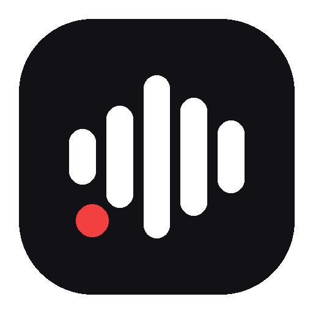

按住一個鍵說話，整理好的文字直接出現在游標位置。
curl -fsSL https://tekelin16-tech.github.io/voicetype/install.sh | bash
打開「終端機」貼上執行。第一次約 5–10 分鐘（要下載 1.5GB 的辨識模型）。 只支援 macOS。
你講話，它把話變成可以直接用的文字——不是逐字稿，是整理過的： 補好標點、拿掉「呃、那個、就是說」、簡體轉成台灣用語、依情境調整語氣。
| 聽 | whisper.cpp，跑在你自己的電腦上。 聲音不會離開這台機器，也不用付辨識費用。11.7 秒的話約 0.8 秒辨識完。 |
|---|---|
| 修稿 | DeepSeek。負責標點、贅字、簡轉繁、語氣。約 2 秒。 |
不想讓文字出去？把風格切成「原始」，完全跳過 DeepSeek，純本機離線運作。
| 按鍵 | 做什麼 |
|---|---|
| ⌥Space | 按住說話，放開就貼上 |
| ⌥Space 按一下 | 改成鎖定錄音，再按一下結束（長句用） |
| ⌥⇧Space | 切換錄音 |
| ⌃⌥Space | 選修稿風格 |
| ⌥⌘H | 歷史紀錄與設定 |
| Esc | 錄音中取消 |
熱鍵全部可以在設定裡改。
| 一般 | 補標點、去贅字、繁體台灣用語 |
| AI 指令 | 口述要丟給 AI 的指令，整理成條理清楚的敘述 |
| 訊息 | LINE、即時通訊。保持口語，不會變公文體 |
| 信件 | 書面語、禮貌得體、適當分段 |
| 筆記 | 條列重點，保留所有資訊 |
| 原始 | 跳過 DeepSeek。離線可用、不花錢、不送資料出去 |
講錯風格不用重錄——歷史紀錄裡可以換個風格重新修稿。
跟同類工具不能同時開。Typeless、superwhisper 這類工具會把麥克風 一直握著，VoiceType 就錄不到聲音。真的撞到時它會直接告訴你是誰佔用。
~/.local/share/voicetype/uninstall.sh
會問你一次才動手，也不會去動 brew 裝的東西（別的程式可能在用）。